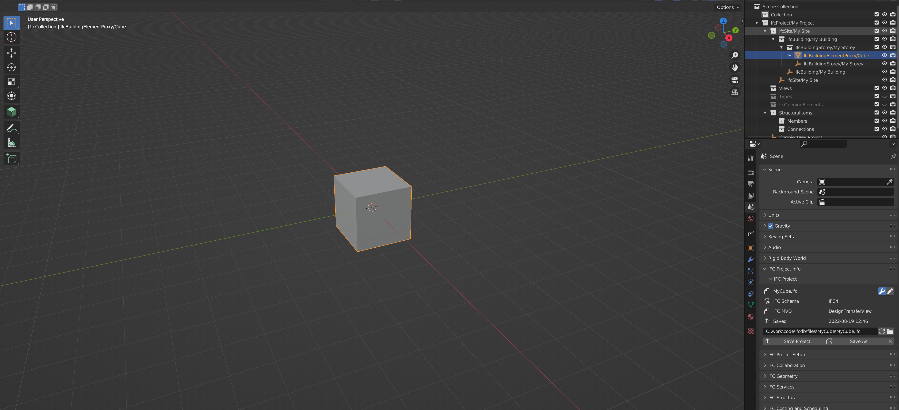
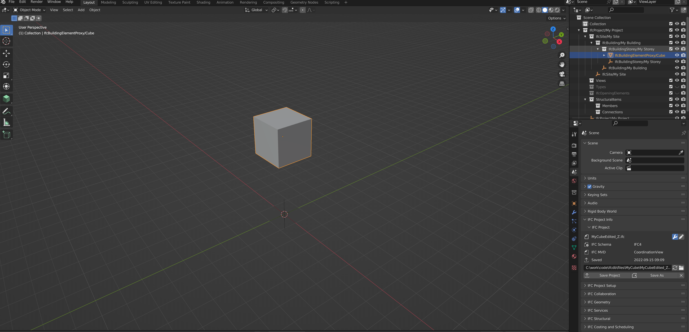
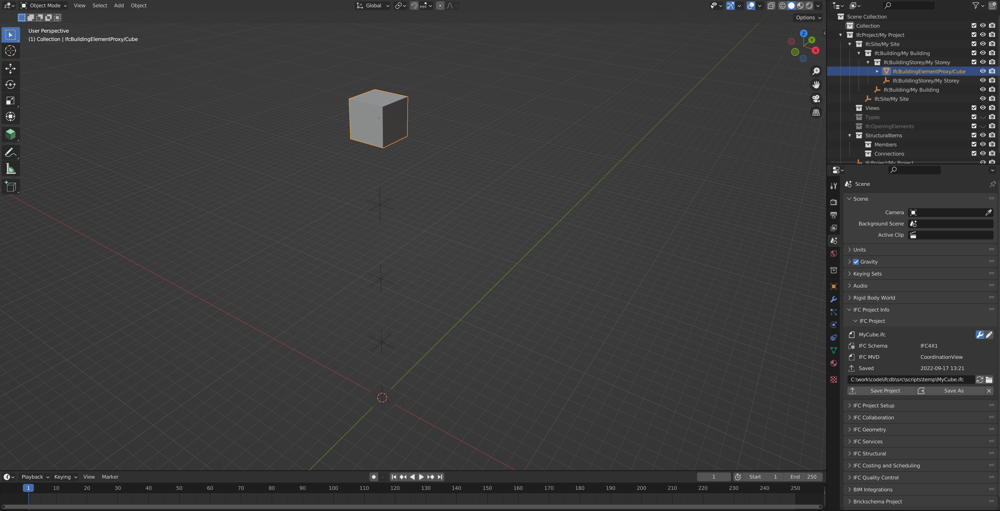
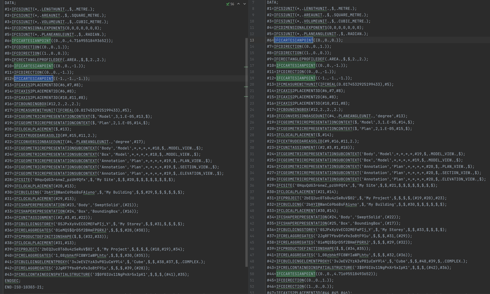

The issue of property updates and “overlinking”#
In the first iterations of diffing IFC files and applying diffs onto the database things looked okay.
However, after testing an optimized IFC file (i.e. removed duplicated objects such as IfcCartesianPoint objects
referring to same coordinates etc.) a new issue appeared.
The problem#
Take the simple example of the blender cube moved slightly up on the Z-axis:

Moved ~4.7 meters up like this

Applying the diff on two ifc file objects with this change being the sole difference leads to a “diff result” using the IfcDiffTool that looks like this:
{
"changed": [
{
"diff": {
"values_changed": {
"root['ObjectPlacement']['RelativePlacement']['Location']['Coordinates'][2]": {
"new_value": 4.71695518493652,
"old_value": 0.0
}
}
},
"guid": "3vJeEVZYzA3vP81uCmY9l4",
"class_name": "IfcBuildingElementProxy"
}
],
"added": [],
"removed": []
}
This change is easy enough to understand and is converted to an EdgeDB insert statement like so:
with
root := (select IfcBuildingElementProxy FILTER .GlobalId=<str>'3vJeEVZYzA3vP81uCmY9l4'),
lvl1 := (select root.ObjectPlacement[is IfcLocalPlacement].RelativePlacement[is IfcAxis2Placement3D].Location[is IfcCartesianPoint]),
SELECT {
lvl1_1 := ( UPDATE lvl1
SET {
Coordinates := [.Coordinates[0], .Coordinates[1], 4.71695518493652]
}
),
}
However, when exporting a new IFC from the DB after the change is applied, it is evident that something has gone wrong:

What this applied change tells us is that the diff result does not take into account any change in duplication of objects made in the local file.
When looking at the IFC file downloaded from the DB (to the left below) compared with the
IFC that was edited locally and applied a diff to (to the right below) it is evident that
the local file has a 1 extra IfcCartesianPoint object in addition to duplication of other objects
related to the ObjectPlacement of the Cube.

Solutions#
UUID map#
One solution that is considered is to create a map between the uuid’s of all the database objects and the specific id’s of the individual rooted AND non-rooted IFC objects.
Pro’s#
Query Complexity
This would simplify the update statement queries significantly as it would no longer be required to always create select paths from root
Efficiency
It would reduce number of selects in a single query to a minium, thus improving query efficiency
Con’s#
Uncertainty of persistent ID’s of non-rooted IFC elements
This would mean that the DB uuid map against IFC objects needs to persist. That would require the non-rooted IFC items to have id’s that persists over many sessions (e.g. a user edits the model locally in a Blender environment and the user closes/reopens blender a few times).
Would the numerical IFC-SPF id’s persist over all those sessions? If so the numerical ID’s could be used
Sending the IFC file would also require passing along the UUID-IFC-ID map along with the IFC file. It is assumed attaching UUID’s to each non-rooted object within the IFC file would make the file too large and the size would easily blow up.
Check for “overlinked” objects#
A check of the inverse relationships of the property path to ensure that the changed property only affect the desired object
Perform the diffs with identifiers?#
This has not been tested yet. But if the diffs could catch Could perhaps solve this?